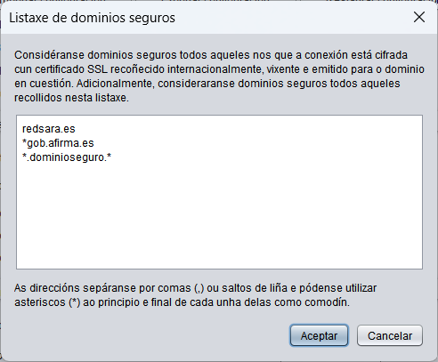

En ocasións, Java non recoñece algúns dominios como seguros ao conectar con Autofirma a un servizo externo a través dunha canle SSL. Esta función permite configurar en Autofirma unha lista de dominios que serán recoñecidos como seguros e evitar esta problemática.
Estes dominios, poderanse engadir no cadro de texto que se mostra na seguinte imaxe, separador por comas ou saltos de liña. Tambien permítese indicar cun asterisco como comodín no principio ou final do dominio que se indique.

A configuración establecida aplicarase ao pulsar sobre o botón OK. Se se pulsa o botón Cancelar, pecharase a xanela sen aplicar a configuración.